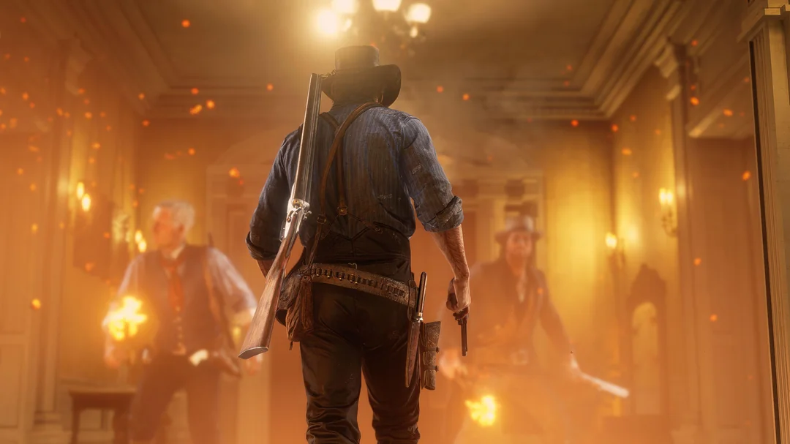

Grand Theft Auto IV
¿Cómo mejorar tu experiencia en GTA IV?
Descubre cómo solucionar algunos de los problemas de la versión de PC y mejorar tu experiencia con FusionFix.
Leer guía →En este apartado encontrarás guías detalladas acerca de diferentes videojuegos y consejos para mejorar tu experiencia en ellos.
Grand Theft Auto IV
Descubre cómo solucionar algunos de los problemas de la versión de PC y mejorar tu experiencia con FusionFix.
Leer guía →Grand Theft Auto V
Explora los misterios de Los Santos y descubre los secretos y coleccionables que esconde el juego.
Leer guía →
Red Dead Redemption 2
Aprende a cazar, cuidar de Arthur, gestionar tu campamento y sobrevivir en las tierras de Red Dead Redemption 2.
Leer guía →